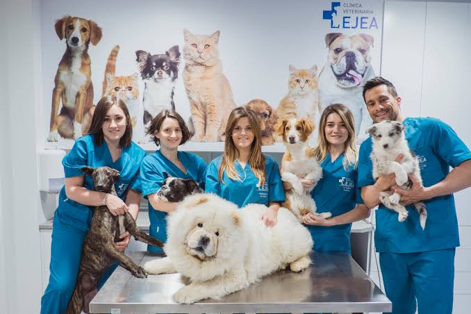

¿Quiénes somos?

Veterinaria San Marcos es un centro dedicado al cuidado y bienestar de las mascotas. Nuestro objetivo es entregar una atención responsable, cercana y de calidad, buscando que cada paciente reciba los cuidados que necesita.
Contamos con un equipo comprometido con la salud de los animales y con la tranquilidad de sus familias.